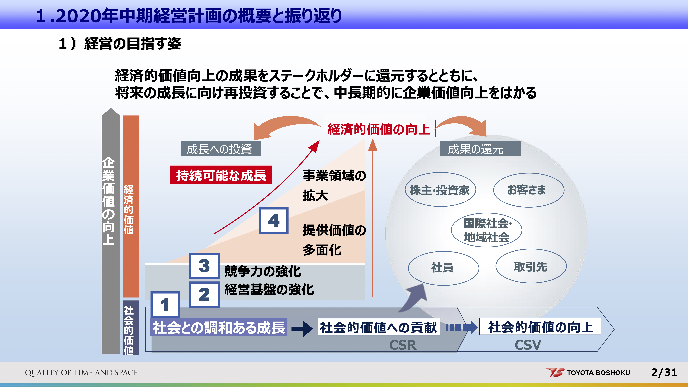
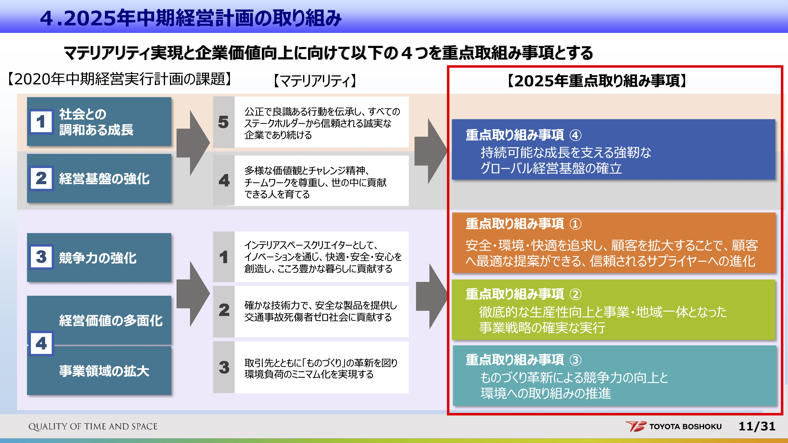
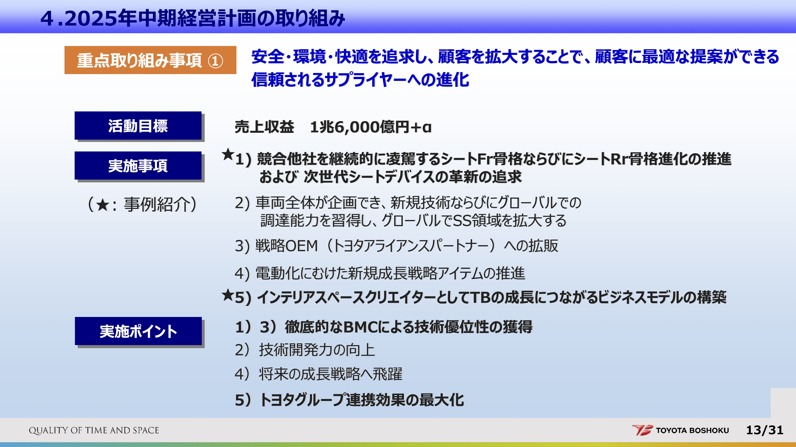
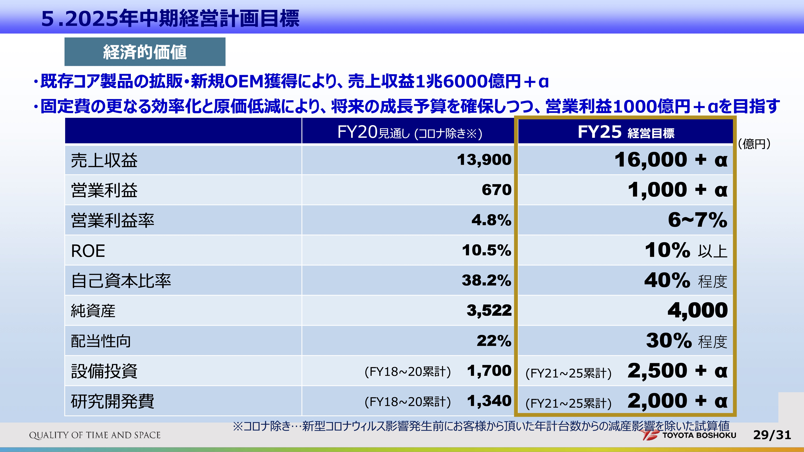

7 経営戦略と長期経営計画
2023年度 管理会計
7.1 長期経営計画とは
7.1.1 背景: 経営戦略
会社は，経営戦略を立てる(詳しくは経営学総論？概論？や経営戦略論)
組織が目標を達成するために，自らの能力と市場機会をどのように適合させるかを明確にする。
わが社の目標は何か？
競合他社との差別化を計りながら、顧客価値をどのように創造すればよいか？
わが社の製品の市場は，特定の地域か，広域の地方か，全国か，それとも世界か？どのようなトレンドの影響を受ける市場か？経済状況，業界そして競合他社からはどのような影響を受けるのか？
どのような組織構造および財務構造がわが社に最適か？
代替戦略にはそれぞれどのようなリスクと機会があるか？ またわれわれが選んだ計画が失敗に終わった場合には，どのような対応策が考えられるだろうか？
有名なのは，Porterのコストリーダーシップ戦略や差別化戦略など。
- コストリーダーシップ戦略
-
吉野家やダイソー（100円ショップ）などは慎重な原価管理によって，低価格ながら良質の製品またはサービスを提供し，長年にわたって利益を上げ成長を続けてきた。
- 差別化戦略
-
Apple社やシャネルのようなブランドは，人気で劣る競合他社の製品またはサービスよりも高い価格でありながら，十分に顧客を惹き付ける差別化された製品または独自性のある製品を提供できる能力を生かして，利益を上げ，成長し続けてきた。
少し話はそれますが，高級ブランドの差別化戦略に関連して，数年前話題になったのがこれです。高級ブランドは，他社と差別化されたブランドイメージがあってこそ，同じものを他社よりも高い値段で売ることができます。ということは，売れ残ってもセールしてしまうとまずいわけです。高い価格で，一部の人しか持つことができないからこそ価値が高まっているという側面があるからです。



7.1.2 長期経営計画
長期経営計画とは
通常3年の計画としてもたれる総合計画であり，戦略実施に向けて，3年の計画期間における長期目標をまず設定し，戦略実施と長期目標の実現に対してキーとなる戦略課題を洗い出し，長期目標の実現と戦略課題の解決に向けて個別構造計画上のプロジェクトの代替案を探索・評価・選択し，これを総合するプロセス
（教科書第6章§1）
戦略実施に向けて以下のような課題・疑問に対処するためのもの（Horngren）
- 我々の目的は何か
- 競合と差別化しながら顧客に価値を提供するためにバリューチェーン上で取れる選択肢は何か
- 最も適した組織構造，財務構造はどのようなものか
- 代替戦略のリスクと機械は何か，そしてもし我々の計画が失敗に終わった時の代替プランは何か




7.2 長期経営計画の意義
7.2.1 明示的な長期目標と戦略課題を指針として資源を配分する
- 戦略は方針・絵に描いた餅。これを組織で手分けして効率的に実現するためには，具体的（数値の形で表現された）な計画が必要。
- 戦略は長期的なものなので，一般的に直ちに各年の計画に落とし込むことは難しい。なので経営戦略の実現に向けて，長期的にはこんな成果を目指します，という意味で長期計画を立てる
- その中で長期的に行なっていく必要のある戦略課題を設定する
- どの事業に力を入れるのか
- 人材確保の問題は
- 従業員は日々の業務に忙殺されて企業の目的やそれに対する戦略を考える機会は少ない
- 長期経営計画を設定する際に企業の直面する機会や脅威を認識し，戦略的・業務的決定に役立てることができる
松山大学は，旧松山高等商業学校を起源とする，文系学部を中心とした私立大学です。「真実」・「実用」・「忠実」の校訓「三実」を教育理念として掲げています。松山大学に進学する学生の多くは中四国出身で，四国の中では1番の私立大学として地元での就職にも強さがあります。一方で立地する四国は人口減や少子化により潜在的な進学者数が減少しています。一方四国内には私立大学が少ないこともあり，幾らかの学問領域の学部が不足していました。そのような現状を受けて，2006年に初めての理系学部である薬学部を設置しました。薬剤師には一定の需要があるにも関わらず，四国内に薬学部のある大学は徳島大学・徳島文理大学だけだったためです。2025年には，同様に情報分野の人材の需要を十分に満たしていないことを念頭に情報学部の設定を目指しています。このように四国一の大学として，人口減の問題を抱えながら，需給の不一致が見られる学問領域への進出を進め，「三実」を指針とした教育に取り組んでいます。
7.2.2 個別構造計画を総合する
- 計画立案のプロセスでは，組織内の情報が共有されることになる
- 各部署の実情やニーズを取りまとめて大きな計画を作るから
- このような情報の共有を通して，全体最適を意識した決定が行えるようになる
- どこにどのぐらいの人員を配置するか，限られた資金をどこに投入するか…
- 営業部の売上予測を踏まえて生産計画を決定する
- 生産計画上のボトルネックの情報を踏まえて，将来の生産設備への投資計画を決める
7.2.3 不確実性に対応する
- 長期的な企業の目的を数値に置き換えるには，未来の状況についての予測が必要
- 為替がこのままの状態なら
- 景気に重大な変化がなければ
- このような予測・前提が外れた場合，長期計画の実行が不可能になったり，長期計画の達成が組織の目的の達成につながらないものになったりする可能性がある。
計画期間の短縮化
新製品開発サイクルなど，ビジネスサイクルの短縮化に伴って長期経営計画も短いものになってきている
長期経営計画も，3年といった必ずしも長期でないものになりつつある
ただし，電力会社や鉄道会社など，長期的な計画が必要とされる業界は5年・10年の経営計画が使われる
将来の予測が難しくなった1973年の石油危機以降，長期経営計画ではなく中期経営計画がよく用いられるようになったとされる (櫻井 2015)
長期経営計画の改訂
- 当初の予測や前提が外れるなどした場合，元の計画に固執するのが必ずしも企業の目的の達成につながらない場合がある。
- 経営環境が不確実な業界・企業では，長期計画として設定したものをその期間中に改訂するような実務がとられる
固定方式
ローリング方式
前進方式
どれが良いのか，どれがどんな状況の企業に適しているのかといったことの証拠は薄い
- そもそも長期経営計画を研究対象としている学術研究は極端に少ない
7.2.4 計画の目的
長期経営計画，それをさらに具体化した予算には4つの目的があるとされる (Merchant and Van der Stede 2017)
1 計画（planning）
- 事前に行う意思決定
- 従業員は日々の業務に忙殺されて企業の目的やそれに対する戦略を考える機会は少ない
- 長期経営計画を設定する際に企業の直面する機会や脅威を認識し，戦略的・業務的決定に役立てることができる
- 実際に業務を行い，問題に直面する前に意思決定を行う，という意味でfeed-forwardな経営管理実務と言える
2 調整（coordination）
- 計画立案のプロセスでは，組織内の情報が共有されることになる
- 各部署の実情やニーズを取りまとめて大きな計画を作るから
- このような情報の共有を通して，全体最適を意識した決定が行えるようになる
- どこにどのぐらいの人員を配置するか，限られた資金をどこに投入するか…
- 営業部の売上予測を踏まえて生産計画を決定する
- 生産計画上のボトルネックの情報を踏まえて，将来の生産設備への投資計画を決める
3 トップの監督 （top management oversight）
- 経営トップは，すべての業務を適切に監視することができない。
- 計画が定まると，計画通りに行っていない，問題のある部分が見える化する
- トップは問題のある部分を理解し，対処すれば良くなる（例外による管理: management-by-exception）
4 モチベーション（motivation）
- 計画や予算は目標としての役割を果たす
- 目標は，従業員のモチベーションに影響を与える
- 目標の達成度合いはしばしば業績評価に結びつき，昇給やボーナスといった種々の報酬に影響するから
- 目標設定理論（locke and ）によると，従業員はただ精一杯頑張るように（do your best）指示されるよりも具体的な数値を持って目標を設定される方がモチベーションが引き出される
- ただし，それが難しすぎたり簡単すぎたりしない限り
7.3 長期経営計画のプロセス
7.3.1 各種分析
戦略を数値計画に落とし込むためには，例えば製品市場分析，環境分析などが行われる
製品市場分析
（マーケティングの授業で出てくる）4P，3C，SWOT分析など
環境分析
経済動向，政治（法規制）動向，技術的動向などの，自社の事業に影響を与えそうな要因を広く検討する
7.3.2 数値による表現
これらの検討を踏まえ，具体的な目標数値を策定していく
財務指標
売上高・営業利益：事業規模を表す。他社や他業界との比較は難しい。
ROA・ROI・ROE：資産や投資に対する利益（\(\frac{\text{純利益}}{\text{使用資本}}\)）。規模の影響を取り除いた比率指標。分子と分母の定義が企業ごとに違うこともある。
売上高成長率：事業の時系列での拡大度合いを見られる。基本的には元の数値が小さいほど高い成長率になるという意味で，規模に依存
非財務的指標
市場占有率：当該市場でのシェア。高いほど競争優位に立ちやすい。
顧客満足：顧客からのフィードバック情報。今後の財務業績を予測する可能性
新製品投入数：研究開発や商品企画に関する情報
新規出店数：規模の拡大に関する目標
7.4 長期経営計画情報の開示
長期経営計画は上場企業であっても開示義務のない情報
- 決算情報とは違う
- 東芝は開示しているけどファーストリテイリングは開示していなさそう
開示するかどうかは企業の判断（自発的開示）
自発的開示情報は歪んでいる可能性がある
- 業績が良い・コーポレートガバナンスがしっかりしている会社など，見せても問題のない会社が開示する傾向 (中條 2011)
- 逆に開示したくない理由がある会社は開示しない？